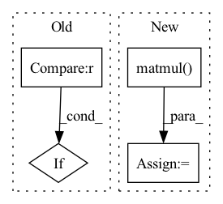

Pattern ID :825
Before Change
nei_message = nei_message.sum(dim=1)
ainput = torch.cat([fatoms, nei_message], dim=1)
atom_hiddens = self.act_func(self.W_o(ainput))
if self.dropout > 0 :
atom_hiddens = F.dropout(atom_hiddens, self.dropout, self.training)
mol_vecs = []
for st, le in scope:After Change
cur_hiddens = atom_hiddens.narrow(0, st, le)
if self.attention:
att_w = torch.matmul( self.W_a(cur_hiddens), cur_hiddens.t())
att_w = F.softmax(att_w, dim=1)
att_hiddens = torch.matmul(att_w, cur_hiddens)
att_hiddens = self.act_func(self.W_b(att_hiddens))
att_hiddens = self.dropout_layer(att_hiddens)In pattern: SUPERPATTERN
Frequency: 3
Non-data size: 4
Instances Fragment ID: 3104703
Project Name: aamini/chemprop
Commit Name: 12d967c5d8a51753b5df6b0ad56e2db319c20e51
Time: 2018-09-23
Author: swansonk.14@gmail.com
File Name: deepchem-test/mpn.py
M Class Name: MPN
N Class Name: MPN
M Method Name: forward(2)
N Method Name: forward(2)
M Parent Class: nn.Module
N Parent Class: nn.Module
M File Name: deepchem-test/mpn.py
N File Name: deepchem-test/mpn.py
M Start Line: 228
M End Line: 240
N Start Line: 238
N End Line: 260
Before Change
ns = scaled_attention_logits.size(-1)
scaled_attention_logits += mask[ns - nd: ns, :ns] * -1e4
if attention_mask is not None :
// Apply the attention mask
scaled_attention_logits = scaled_attention_logits + attention_mask
attention_weights = torch.softmax(scaled_attention_logits, dim=-1)
After Change
scaled_attention_logits += mask[ns - nd: ns, :ns] * -1e4
attention_weights = torch.softmax(scaled_attention_logits, dim=-1)
scaled_attention = torch.matmul( attention_weights, v)
return scaled_attention
Fragment ID: 3104702
Project Name: saareliad/ftpipe
Commit Name: b29b71a9e5b89f728dc936a6c8600a1507ba0bdd
Time: 2020-04-21
Author: alondej@gmail.com
File Name: models/normal/NLP_models/modeling_ctrl.py
M Class Name: ScaledDotProductAttention
N Class Name: ScaledDotProductAttention
M Method Name: forward(5)
N Method Name: forward(7)
M Parent Class: nn.Module
N Parent Class: nn.Module
M File Name: models/normal/NLP_models/modeling_ctrl.py
N File Name: models/normal/NLP_models/modeling_ctrl.py
M Start Line: 71
M End Line: 95
N Start Line: 79
N End Line: 86
Before Change
attention_weights = torch.softmax(scaled_attention_logits, dim=-1)
// Mask heads if we want to
if head_mask is not None :
attention_weights = attention_weights * head_mask
// output = torch.matmul(attention_weights, v)
// return output, attention_weightsAfter Change
// if head_mask is not None:
// attention_weights = attention_weights * head_mask
output = torch.matmul( attention_weights, v)
// return output, attention_weights
return output
Fragment ID: 3104717
Project Name: saareliad/ftpipe
Commit Name: 9c6e1c89c840e169f67402839a59e47ae906a3e2
Time: 2020-04-12
Author: alonde-jager@rishon.csf.technion.ac.il
File Name: models/normal/NLP_models/modeling_ctrl.py
M Class Name: ScaledDotProductAttention
N Class Name: ScaledDotProductAttention
M Method Name: forward(5)
N Method Name: forward(7)
M Parent Class: nn.Module
N Parent Class: nn.Module
M File Name: models/normal/NLP_models/modeling_ctrl.py
N File Name: models/normal/NLP_models/modeling_ctrl.py
M Start Line: 71
M End Line: 95
N Start Line: 80
N End Line: 96